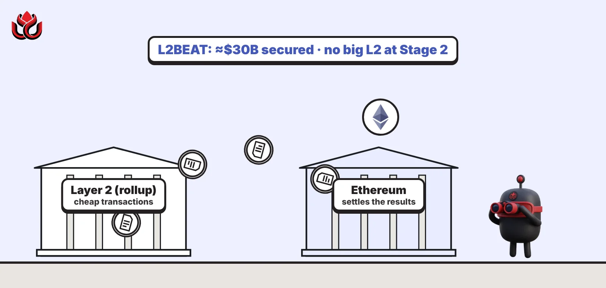
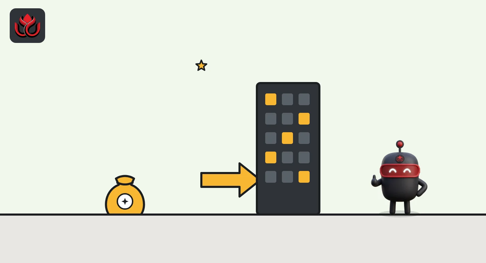
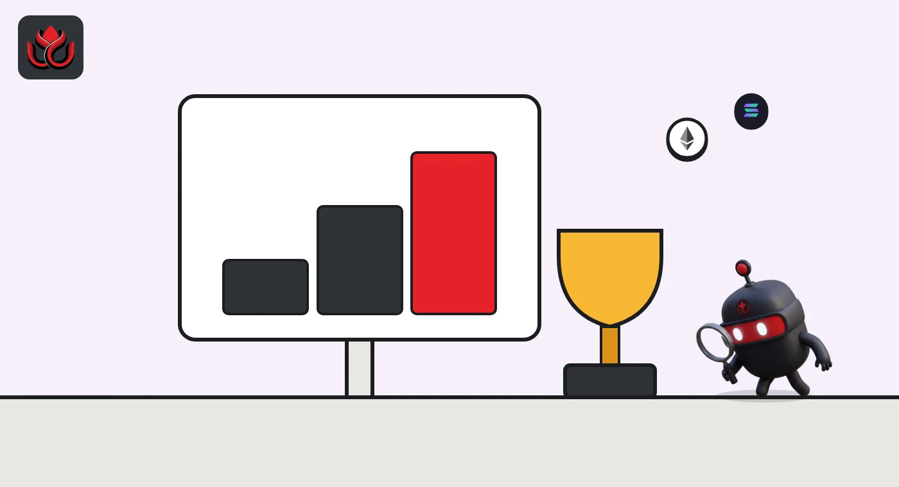

What is a layer 2? Rollups, proofs and why no big L2 is Stage 2 yet
A layer 2 is a separate blockchain that runs transactions cheaply and settles them on Ethereum, using fraud proofs or validity proofs to show its state is correct. L2BEAT tracks about $30 billion in L2s, and its Stages show how much control each team still holds.

Key points
- A layer 2 (L2) processes transactions off Ethereum and posts the results back, so users pay less while relying partly on Ethereum's security.
- Optimistic rollups assume their state is right unless someone proves fraud within a challenge window. ZK rollups prove every batch with a validity proof.
- L2BEAT ranks rollups Stage 0, 1 or 2. Stage 2 needs permissionless fraud proofs and at least 30 days for users to exit before unwanted upgrades.
- As of November 2, 2026, L2BEAT shows about $30 billion secured by layer 2s, with Base and Arbitrum One holding most of it, both at Stage 1.
What is a layer 2?
Ethereum, the main chain or layer 1, can only fit so many transactions in each block. A layer 2 is a separate blockchain that takes transactions off Ethereum, runs them more cheaply and then records the results on Ethereum. If the L2 is built well, users can always get their funds back to Ethereum even if the L2's operators misbehave or vanish.
Ethereum's own plans lean on L2s. Ethereum.org says layer-2 rollups developed much faster than expected and already provide a lot of scaling, so shard chains were dropped from the roadmap.
The sector is large. L2BEAT, the independent tracker most people cite, showed about $30 billion in total value secured on November 2, 2026, up 35% over a year, and lists 94 layer-2 projects.
How does a rollup work?
A rollup is the most common kind of L2. It does three things:
- Orders transactions. A sequencer, usually one machine run by the team, puts transactions into blocks.
- Posts data to Ethereum. Compressed transaction data goes to Ethereum, now mostly as blobs, a cheap data type added for rollups. With that data, anyone can rebuild the L2's state.
- Proves its state. The rollup posts a summary of its state (a state root) to Ethereum, and a proof system shows that summary is correct.
Speed for users comes from the L2 itself. On Base, for example, the docs list about 2 seconds for a transaction to land in a block and about 20 minutes until its batch is final on Ethereum.

What is the difference between optimistic and ZK rollups?
Optimistic rollups assume each state root is correct unless someone challenges it within a set window, by submitting a fraud proof (also called a fault proof) that shows the claim is wrong. That window is why withdrawals from optimistic rollups are slow. On Arbitrum One, L2BEAT lists a challenge period of 6 days and 8 hours, run through a bisection game called BoLD that anyone with enough funds can join; each assertion needs a 3,600 ETH stake.
ZK rollups attach a validity proof, a piece of math that shows every batch is correct, before Ethereum accepts it. There is no challenge window. Scroll is one example: L2BEAT describes STARK proofs wrapped in SNARK proofs for efficiency.
Some rollups now mix both. Base backs proposals with proofs from secure hardware (TEE) and ZK proofs, and says withdrawals take 5 days with one proof or 1 day when both agree.
What are L2BEAT stages?
L2BEAT's Stages framework, whose current spec is dated June 6, 2024, and has been amended since, grades how much a rollup still depends on its team. L2BEAT itself warns that "stages do not reflect project security" on their own; they measure decentralization of control.
- Stage 0, "full training wheels": the project calls itself a rollup, posts state roots and data to Ethereum, and publishes software that can rebuild its state. Since June 20, 2025, at least five outside parties must be able to submit fraud proofs.
- Stage 1, "limited training wheels": the only way, other than bugs, to block a withdrawal indefinitely is to compromise at least 75% of a Security Council of at least 8 members. Upgrades from outside the council need at least a 5-day exit window, and optimistic rollups need at least a 5-day challenge period (cut from 7 days on April 30, 2026).
- Stage 2: fraud proofs are open to anyone, users get at least 30 days to exit before unwanted upgrades, and the Security Council can act only on provable onchain bugs.

Which layer 2s are the biggest and what stage are they?
On L2BEAT's front page on November 2, 2026, the top five by value secured were:
- Base Chain: about $14.7 billion, Stage 1.
- Arbitrum One: about $9.5 billion, Stage 1.
- OP Mainnet: about $1.6 billion, Stage 1.
- Mantle: about $1.3 billion, Stage 0.
- Lighter Exchange: about $1.1 billion, Stage 0 appchain.
Stages can go down as well as up. L2BEAT says Scroll fell to Stage 0 after it replaced its 9-of-12 Security Council with a 3-of-4 team multisig on June 1, 2026. For a closer look at one Stage 1 rollup, see LC Insight's report on Base's next upgrade.
Value secured by the five largest layer 2s
US$ billion
Source: L2BEAT, checked November 2, 2026
How can you check a layer 2 yourself?
Every project page on L2BEAT follows the same layout, and a few lines tell you most of what matters:
- Stage and missing items. The Arbitrum One page, for example, shows Stage 1 with two items left to fix for Stage 2.
- Exit window. How long users have to leave before an upgrade lands. Arbitrum One's page lists 10 days for regular upgrades in one place and about 17.4 days in another, and none for emergency upgrades, so read the details.
- Security Council. Arbitrum One's council has 12 members and needs 9 to act. Base's has 11 and needs 8, about 73%, but it signs together with a Coinbase multisig; Base counts that as 9 of 12 signers, or 75%, and L2BEAT rates Base Stage 1.
- Proof system. Who can propose and challenge state, and what bond they must post.
- Liveness. Gaps in posting state to Ethereum. L2BEAT logged a 23-hour gap for Base on October 8 to 9, 2026.
L2BEAT also shows how much of a project's value relies on extra trust, such as tokens issued by outside bridges. For Base, it put that share at 34.2% on November 2, 2026, according to its Base page.
What are the risks of using a layer 2?
- Upgrade keys. Many L2s can change their contracts instantly. L2BEAT flags this for Base and Scroll, where a malicious upgrade could steal funds and users have no window to leave first.
- Sequencer power. A single sequencer can delay or reorder transactions. Good designs let users force transactions through Ethereum; L2BEAT lists up to 12 hours for Base and up to 7 days for Scroll.
- Bridges. Official bridges follow the rollup's withdrawal rules. Faster third-party bridges use their own money and add their own risks.
- Liveness. If a rollup stops posting state to Ethereum, withdrawals stall even if the L2 keeps making blocks.
Rollup proof systems keep changing. Optimism, for example, rewired its fault proofs across four chains in September 2026.
LC Insight analysis
This section is our reading of the facts above, not a statement of fact.
- Read the stage label as an answer to one question: who can change the rules? The step to Stage 2 centers on a 30-day exit window and open fraud proofs, and the biggest rollups have not taken it.
- Hybrid proofs are spreading. Base's mix of TEE and ZK proofs cuts withdrawals to as little as 1 day, but it adds trust in hardware makers that the Stages framework does not fully capture.
- Value is concentrated. Base and Arbitrum One hold about 80% of the roughly $30 billion L2BEAT tracks, so trouble at either would hit most layer-2 users.
What's next
- Any large rollup moving to Stage 2 or adding a 30-day exit window.
- Stage downgrades like Scroll's in June 2026.
- Changes to L2BEAT's Stages rules, which were last updated on April 30, 2026.
Frequently asked questions
Is a layer 2 as safe as Ethereum?
Not fully. A rollup posts data and proofs to Ethereum, but its upgrade keys, sequencer and proof system add risks. L2BEAT's stages show how much control the team still holds.
Why do withdrawals from some layer 2s take a week?
Optimistic rollups wait out a challenge window so anyone can prove fraud. L2BEAT lists 6 days and 8 hours for Arbitrum One; Base's window is 5 days, or 1 day with two proofs.
Are any rollups Stage 2?
None of the five largest by value on L2BEAT were Stage 2 on November 2, 2026. Base, Arbitrum One and OP Mainnet were Stage 1.
Disclaimer. This article is based on public information and the sources listed below as of the update time shown. It is for information only and is not investment, legal or tax advice. Figures may change as companies and authorities publish new data.